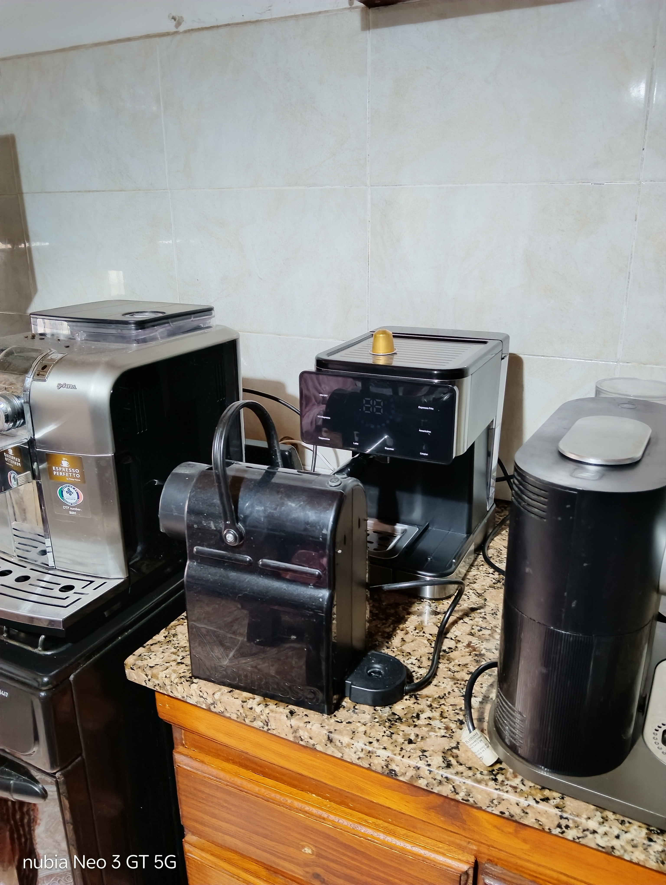

Mantenimiento preventivo, descalcificación y reparación integral de cafeteras express, de cápsula y eléctricas de filtro en taller.
Recibimos tu cafetera en el taller y realizamos una revisión detallada de la falla (falta de presión, pérdidas de agua, problemas de temperatura o encendido).
Te informamos el diagnóstico exacto desglosando la mano de obra y el valor de los repuestos/insumos necesarios.
Efectuamos el cambio de bombas, sellos, oleras, resistencias o reparación de placa, dejándola lista para retirar.
Los gastos de repuestos corren a cargo del cliente. Podrás abonarlos mediante transferencia bancaria previa al inicio del arreglo o al retirar la máquina.
Todos nuestros trabajos en cafeteras cuentan con 3 meses (90 días) de garantía en repuestos y mano de obra.
Atendemos todas las marcas del mercado nacional e importado:
Consultanos por la dirección del taller o coordiná la entrega de tu equipo.
Consultar por WhatsApp 📱Trabajo realizado:
